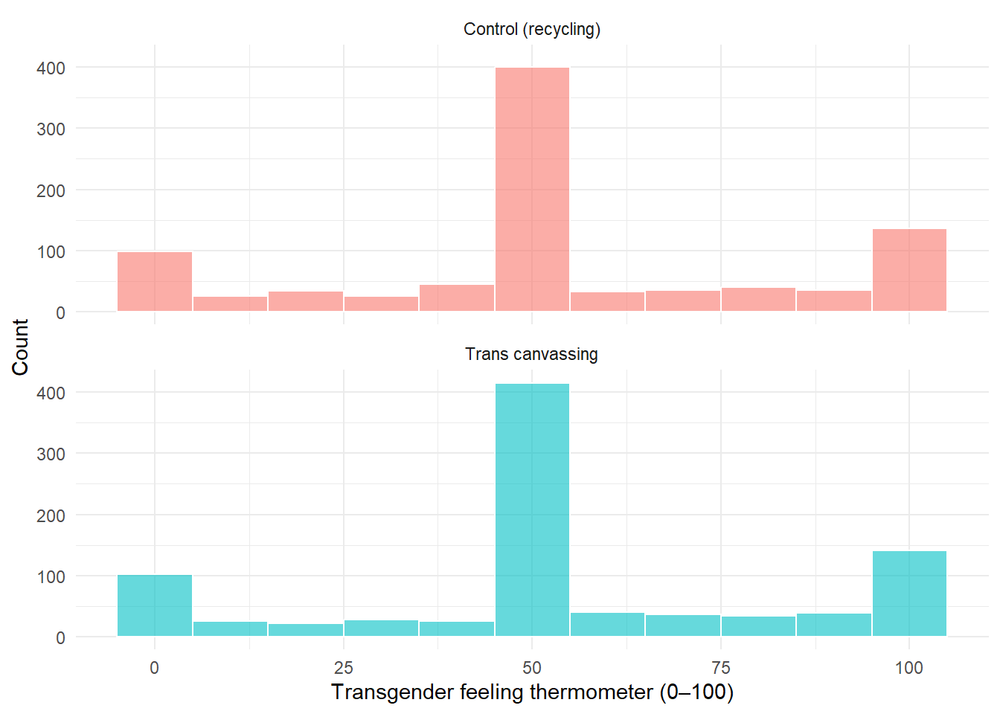
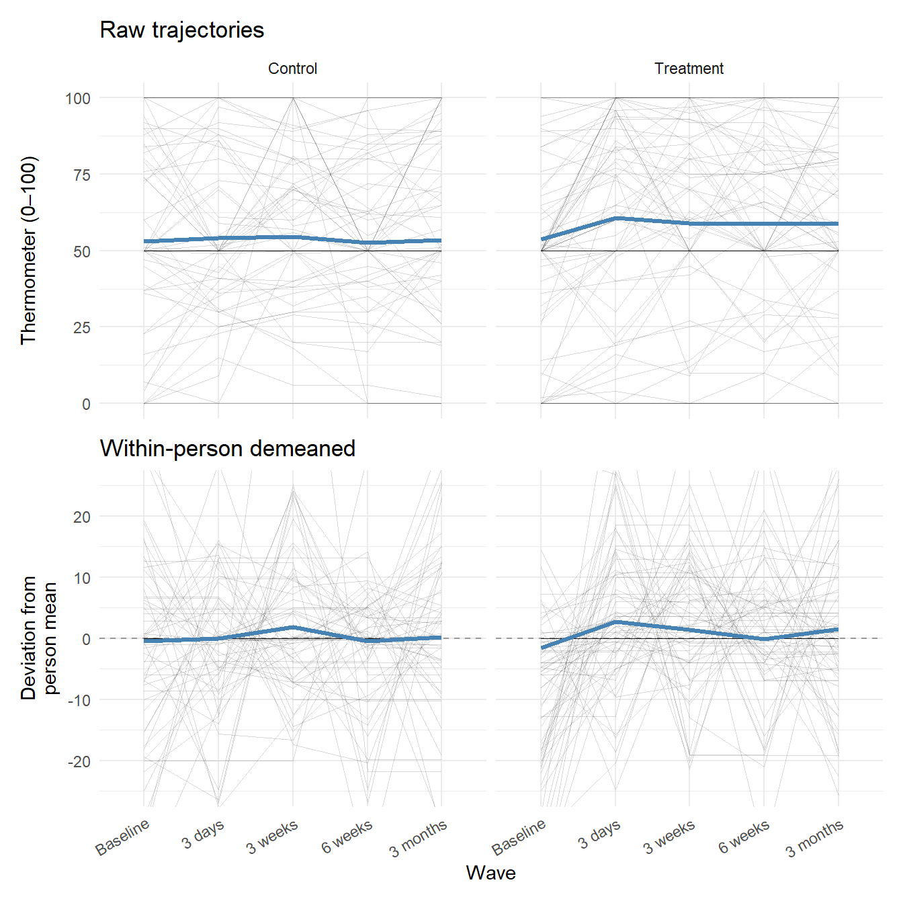
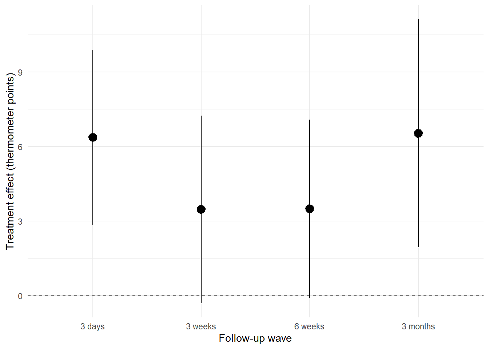
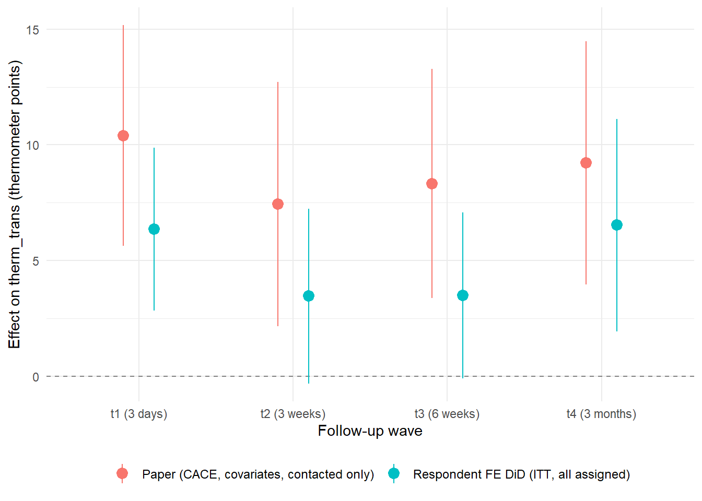

library(tidyverse)
library(haven)
library(fixest)
library(sandwich)
library(lmtest)
library(broom)
library(knitr)
library(patchwork)
# Load replication data (downloaded from Harvard Dataverse, doi:10.7910/DVN/WKR39N)
bk <- read_dta("broockman_kalla_replication_data.dta")Fixed Effects Estimators in Practice
A Replication of Broockman & Kalla (2016)
Note
This report was generated using AI under general human direction. At the time of generation, the contents have not been comprehensively reviewed by a human analyst.
1 Introduction
Broockman & Kalla (2016), “Durably reducing transphobia: a field experiment on door-to-door canvassing,” published in Science, is a landmark study in political persuasion research. It demonstrates that brief (~10-minute) doorstep conversations conducted by canvassers — including transgender canvassers — produced lasting reductions in anti-transgender prejudice among Miami-Dade County voters.
The study is valuable for teaching fixed effects (FE) estimators for several reasons:
- Panel structure. Respondents were surveyed at five time points: a baseline (t0) and four follow-ups at 3 days (t1), 3 weeks (t2), 6 weeks (t3), and 3 months (t4) post-canvass.
- Randomized treatment. Households were randomly assigned to receive a conversation about transgender non-discrimination law (treatment) or recycling (placebo), using a blocked design.
- Rich outcome data. Multiple attitude measures were collected at each wave, including a transgender feeling thermometer (0–100), policy support items, and gender norm scales.
This tutorial uses the publicly available replication data to:
- Describe the data structure and outcome variable coverage.
- Verify baseline balance between treatment and control groups.
- Demonstrate the value of respondent fixed effects through a variance decomposition and model comparison.
- Replicate the paper’s main reported result using their exact specification, and compare it to the FE approach.
1.1 Study Design in Brief
The experiment used a placebo-controlled canvassing design: canvassers knocked on doors regardless of assignment, then either initiated the intervention (trans rights conversation) or the placebo (recycling conversation) based on random assignment. This design identifies voters who were home and willing to engage — improving comparability between treatment and control.
The paper’s estimand is the Complier Average Causal Effect (CACE): the effect among voters who actually had a conversation at the door, estimated by dividing the Intent-to-Treat (ITT) effect by the contact rate.
2 Data
The dataset contains 68378 rows (one per survey respondent invited to participate) and 120 columns. Outcome variables follow the naming convention [outcome]_t[wave], e.g., therm_trans_t0 through therm_trans_t4.
2.1 Reshaping to Long Format
For a fixed effects analysis, we reshape to long format so each row is a respondent × wave observation.
Code
id_vars <- c("id", "treat_ind", "contacted", "exp_actual_convo",
"canvasser_id", "hh_id", "block_ind",
"vf_age", "vf_female", "vf_democrat", "vf_republican",
"vf_black", "vf_white", "vf_hispanic",
"cluster_level_t0_scale_mean")
outcome_stems <- c("therm_trans", "therm_obama", "therm_marijuana",
"miami_trans_law", "miami_trans_law2",
"gender_norm_rights", "gender_norm_trans_moral_wrong",
"gender_norm_looks")
outcome_cols <- names(bk) |>
grep(paste0("^(", paste(outcome_stems, collapse = "|"), ")_t[0-4]$"),
x = _, value = TRUE)
bk_long <- bk |>
select(all_of(c(id_vars, outcome_cols))) |>
pivot_longer(
cols = all_of(outcome_cols),
names_to = c(".value", "wave"),
names_pattern = "^(.+)_(t[0-4])$"
) |>
mutate(wave = factor(wave, levels = paste0("t", 0:4)))The long-format dataset has 341890 rows (68378 respondents × 5 waves).
2.2 Outcome Variable Coverage by Wave
Not all outcome measures were fielded at every wave. The table below shows non-missing response counts for key outcomes.
Code
bk_long |>
filter(!is.na(treat_ind)) |>
group_by(wave) |>
summarise(
n_respondents = sum(!is.na(therm_trans)),
therm_trans = sum(!is.na(therm_trans)),
therm_obama = sum(!is.na(therm_obama)),
miami_trans_law = sum(!is.na(miami_trans_law)),
gender_norm_rights = sum(!is.na(gender_norm_rights)),
.groups = "drop"
) |>
kable(
col.names = c("Wave", "N respondents", "therm_trans",
"therm_obama", "miami_trans_law", "gender_norm_rights"),
caption = "Non-missing response counts by wave (treatment-assigned respondents only)"
)| Wave | N respondents | therm_trans | therm_obama | miami_trans_law | gender_norm_rights |
|---|---|---|---|---|---|
| t0 | 1825 | 1825 | 1825 | 1825 | 1825 |
| t1 | 600 | 600 | 600 | 600 | 600 |
| t2 | 568 | 568 | 568 | 568 | 568 |
| t3 | 567 | 567 | 567 | 0 | 567 |
| t4 | 385 | 385 | 385 | 0 | 385 |
Key observations:
therm_trans(the headline outcome) is available at all five waves.- Attrition is substantial: from 1825 respondents at baseline to around 385 at the 3-month follow-up.
- The placebo therms (
therm_obama,therm_marijuana) and law items are available at most waves, enabling specificity checks.
3 Baseline Balance
A well-executed randomization should produce treatment and control groups that look similar at baseline. Because the study used blocked household-level randomization, we expect good balance on pre-treatment covariates.
Code
bk_long |>
filter(wave == "t0", !is.na(therm_trans), !is.na(treat_ind)) |>
mutate(Treatment = if_else(treat_ind == 1, "Trans canvassing", "Control (recycling)")) |>
ggplot(aes(x = therm_trans, fill = Treatment)) +
geom_histogram(binwidth = 10, position = "identity", alpha = 0.6, color = "white") +
facet_wrap(~ Treatment, ncol = 1) +
labs(
x = "Transgender feeling thermometer (0–100)",
y = "Count"
) +
theme_minimal() +
theme(legend.position = "none")
Code
bk_long |>
filter(wave == "t0", !is.na(therm_trans), !is.na(treat_ind)) |>
mutate(Treatment = if_else(treat_ind == 1, "Trans canvassing", "Control (recycling)")) |>
group_by(Treatment) |>
summarise(
N = n(),
Mean = round(mean(therm_trans), 1),
Median = median(therm_trans),
SD = round(sd(therm_trans), 1),
`% at 0` = round(mean(therm_trans == 0) * 100, 1),
`% at 50` = round(mean(therm_trans == 50) * 100, 1),
`% at 100` = round(mean(therm_trans == 100) * 100, 1)
) |>
kable(caption = "Baseline therm_trans summary statistics by treatment group")| Treatment | N | Mean | Median | SD | % at 0 | % at 50 | % at 100 |
|---|---|---|---|---|---|---|---|
| Control (recycling) | 913 | 52.9 | 50 | 29.2 | 9.2 | 41.2 | 13.8 |
| Trans canvassing | 912 | 53.6 | 50 | 29.3 | 9.5 | 42.5 | 14.6 |
The groups are nearly identical in means (~53 points), medians (50), and standard deviations (~29). The distribution itself is notably multimodal, with strong mass at 0, 50, and 100 — a common “scale use” artifact in feeling thermometer data, where respondents anchor at round numbers.
4 The Value of Fixed Effects
4.1 Motivation: Variance Decomposition
Before fitting models, it is worth asking how much of the variance in therm_trans is between persons (stable individual-level differences in baseline attitudes) versus within persons over time (fluctuations that the treatment might cause). If most variance is between-person, an estimator that removes individual fixed effects should yield substantial precision gains.
Code
bk_analysis <- bk_long |>
filter(!is.na(treat_ind), !is.na(therm_trans)) |>
mutate(post = as.integer(wave != "t0"))
# Between-person variance: variance of person-level means
between_var <- bk_analysis |>
group_by(id) |>
summarise(person_mean = mean(therm_trans)) |>
pull(person_mean) |>
var()
# Within-person variance: variance of deviations from person means
within_var <- bk_analysis |>
group_by(id) |>
mutate(dev = therm_trans - mean(therm_trans)) |>
pull(dev) |>
var()
total_var <- var(bk_analysis$therm_trans)
tibble(
Component = c("Between-person", "Within-person", "Total"),
Variance = round(c(between_var, within_var, total_var), 1),
`% of total` = round(c(between_var, within_var, total_var) / total_var * 100, 1)
) |>
kable(caption = "Variance decomposition of therm_trans")| Component | Variance | % of total |
|---|---|---|
| Between-person | 791.6 | 97.0 |
| Within-person | 118.1 | 14.5 |
| Total | 815.6 | 100.0 |
The decomposition shows that the large majority of variance in therm_trans is stable across individuals — people vary a great deal in their baseline attitudes toward transgender people, and those differences persist over time. This is precisely the kind of situation where a respondent fixed effect dramatically improves estimation: by removing stable individual differences, we sharpen our ability to detect the treatment-induced change within each person.
4.2 Individual Trajectories
Before fitting models, it is instructive to look at how individual respondents actually change over time. The fixed effects estimator identifies treatment effects from within-person change — so it is worth seeing what that variation looks like in the raw data.
The plots below show therm_trans trajectories for a random sample of respondents, separated by treatment arm. Each line is one person; the thick line is the group mean trajectory. Respondents are restricted to those with complete data across all five waves, so each line spans the full panel.
Code
set.seed(8473)
# Respondents with all 5 waves of therm_trans
complete_ids <- bk_analysis |>
filter(!is.na(therm_trans)) |>
count(id) |>
filter(n == 5) |>
left_join(bk_analysis |> select(id, treat_ind) |> distinct(), by = "id") |>
filter(!is.na(treat_ind)) |>
group_by(treat_ind) |>
slice_sample(n = 75) |>
pull(id)
wave_labels_full <- c(t0 = "Baseline", t1 = "3 days", t2 = "3 weeks",
t3 = "6 weeks", t4 = "3 months")
traj_base <- bk_analysis |>
filter(id %in% complete_ids, !is.na(therm_trans)) |>
mutate(
treatment_label = if_else(treat_ind == 1, "Treatment", "Control"),
wave_label = factor(wave_labels_full[as.character(wave)], levels = wave_labels_full)
)
# Stack raw and within-person demeaned versions
traj_combined <- bind_rows(
traj_base |> mutate(panel = "Raw trajectories", y = therm_trans),
traj_base |>
group_by(id) |>
mutate(y = therm_trans - mean(therm_trans), panel = "Within-person demeaned") |>
ungroup()
) |>
mutate(panel = factor(panel, levels = c("Raw trajectories", "Within-person demeaned")))
# Group means computed from the full analytic dataset, not just the sample
full_means <- bind_rows(
bk_analysis |>
filter(!is.na(therm_trans)) |>
mutate(
treatment_label = if_else(treat_ind == 1, "Treatment", "Control"),
wave_label = factor(wave_labels_full[as.character(wave)], levels = wave_labels_full),
panel = "Raw trajectories",
y = therm_trans
),
bk_analysis |>
filter(!is.na(therm_trans)) |>
mutate(treatment_label = if_else(treat_ind == 1, "Treatment", "Control"),
wave_label = factor(wave_labels_full[as.character(wave)], levels = wave_labels_full)) |>
group_by(id) |>
mutate(y = therm_trans - mean(therm_trans), panel = "Within-person demeaned") |>
ungroup()
) |>
mutate(panel = factor(panel, levels = c("Raw trajectories", "Within-person demeaned"))) |>
group_by(treatment_label, wave_label, panel) |>
summarise(y = mean(y), .groups = "drop")
p_raw <- ggplot(
traj_combined |> filter(panel == "Raw trajectories"),
aes(x = wave_label, y = y)
) +
geom_line(aes(group = id), alpha = 0.15, linewidth = 0.3) +
geom_line(data = full_means |> filter(panel == "Raw trajectories"),
aes(group = treatment_label), color = "steelblue", linewidth = 1.2) +
facet_wrap(~ treatment_label) +
labs(x = NULL, y = "Thermometer (0–100)", title = "Raw trajectories") +
theme_minimal() +
theme(axis.text.x = element_blank(), axis.ticks.x = element_blank())
p_demeaned <- ggplot(
traj_combined |> filter(panel == "Within-person demeaned"),
aes(x = wave_label, y = y)
) +
geom_hline(yintercept = 0, linetype = "dashed", color = "gray60") +
geom_line(aes(group = id), alpha = 0.15, linewidth = 0.3) +
geom_line(data = full_means |> filter(panel == "Within-person demeaned"),
aes(group = treatment_label), color = "steelblue", linewidth = 1.2) +
facet_wrap(~ treatment_label) +
coord_cartesian(ylim = c(-25, 25)) +
labs(x = "Wave", y = "Deviation from\nperson mean", title = "Within-person demeaned") +
theme_minimal() +
theme(axis.text.x = element_text(angle = 30, hjust = 1),
strip.text = element_blank())
p_raw / p_demeaned
A few things stand out:
- Between-person spread dominates the raw panel. Lines span nearly the full 0–100 range at every wave, making any treatment signal hard to discern. This is precisely the between-person variance the FE estimator absorbs.
- Demeaning compresses the spread dramatically. Once each respondent’s mean is subtracted, individual lines cluster tightly around zero, reducing the apparent scale of variation by roughly an order of magnitude.
- The treatment effect is visible in both panels. In the raw top-right panel, the full-sample group mean jumps at t1 and remains elevated relative to the control mean. The demeaned panel shows the same shift anchored at zero, making it easier to read the magnitude of within-person change directly.
- Within-person stability is real but not absolute. Even after demeaning, individual lines still cross and fluctuate, reflecting genuine within-person noise that limits precision at later waves with fewer observations.
4.3 Model Comparison: Pooled OLS vs. Respondent FE
We fit two DiD-style models. Both include an interaction of treat_ind × post to identify the treatment effect (since treat_ind is time-invariant, it is absorbed by the FE in the second model):
- Pooled OLS: No individual fixed effects; uses all variation, including between-person differences.
- Respondent FE: Absorbs all time-invariant individual characteristics; identifies the treatment effect purely from within-person change.
Code
m_ols_did <- feols(
therm_trans ~ treat_ind * post + wave,
data = bk_analysis,
vcov = "HC1"
)
m_fe_did <- feols(
therm_trans ~ treat_ind:post + wave | id,
data = bk_analysis,
vcov = ~id
)
etable(m_ols_did, m_fe_did,
headers = c("Pooled OLS", "Respondent FE"),
keep = c("treat_ind", "post", "treat_ind:post"),
digits = 3,
title = "Pooled OLS vs. Respondent FE: treatment × post coefficient on therm_trans") m_ols_did m_fe_did
Pooled OLS Respondent FE
Dependent Var.: therm_trans therm_trans
treat_ind 0.664 (1.37)
post 0.271 (1.77)
treat_ind x post 5.08** (1.83) 4.31** (1.55)
Fixed-Effects: ------------- -------------
id No Yes
________________ _____________ _____________
S.E. type Heteros.-rob. by: id
Observations 3,945 3,945
R2 0.00893 0.85847
Within R2 -- 0.02230
---
Signif. codes: 0 '***' 0.001 '**' 0.01 '*' 0.05 '.' 0.1 ' ' 1The respondent FE model achieves a higher R² and a smaller standard error on the treatment effect, consistent with the variance decomposition above: once we remove the large between-person component, the within-person treatment signal is estimated more precisely.
4.4 Wave-by-Wave Treatment Effects
We estimate the treatment effect at each post-treatment wave separately, comparing each follow-up to respondents’ own baselines.
Code
waves_list <- c("t1", "t2", "t3", "t4")
wave_results <- map(waves_list, function(w) {
feols(
therm_trans ~ treat_ind:post + wave | id,
data = bk_analysis |>
filter(wave %in% c("t0", w)) |>
mutate(post = as.integer(wave == w)),
vcov = ~id
) |>
tidy(conf.int = TRUE) |>
filter(term == "treat_ind:post") |>
mutate(wave = w)
}) |> list_rbind()
wave_labels <- c(t1 = "3 days", t2 = "3 weeks", t3 = "6 weeks", t4 = "3 months")
wave_results |>
mutate(wave_label = wave_labels[wave]) |>
select(wave_label, estimate, std.error, conf.low, conf.high, p.value) |>
mutate(across(where(is.numeric), \(x) round(x, 2))) |>
kable(
col.names = c("Wave", "Estimate", "SE", "95% CI low", "95% CI high", "p-value"),
caption = "Respondent FE treatment effects on therm_trans at each follow-up wave (vs. own baseline)"
)| Wave | Estimate | SE | 95% CI low | 95% CI high | p-value |
|---|---|---|---|---|---|
| 3 days | 6.36 | 1.79 | 2.85 | 9.87 | 0.00 |
| 3 weeks | 3.47 | 1.92 | -0.31 | 7.24 | 0.07 |
| 6 weeks | 3.50 | 1.83 | -0.09 | 7.08 | 0.06 |
| 3 months | 6.53 | 2.33 | 1.95 | 11.11 | 0.01 |
Code
wave_results |>
mutate(wave_label = factor(wave_labels[wave], levels = wave_labels)) |>
ggplot(aes(x = wave_label, y = estimate, ymin = conf.low, ymax = conf.high)) +
geom_hline(yintercept = 0, linetype = "dashed", color = "gray50") +
geom_pointrange(size = 0.8) +
labs(
x = "Follow-up wave",
y = "Treatment effect (thermometer points)"
) +
theme_minimal()
The FE estimates are positive at all four waves, with the 3-day and 3-month estimates most clearly separated from zero. The middle waves (3 weeks, 6 weeks) show positive point estimates whose confidence intervals graze zero, consistent with the paper’s finding of persistent but attenuating effects. The wide intervals reflect attrition — fewer respondents provide within-person comparisons at later waves.
5 Replicating the Paper’s Specification
5.1 The Paper’s Approach
Broockman & Kalla do not use respondent fixed effects. Instead, they achieve identification through:
- Experimental design — randomization guarantees balance in expectation.
- Covariate adjustment — OLS with 26 pre-specified baseline covariates reduces residual variance and increases precision.
- Sample restriction — analysis is limited to
contacted == 1(voters who answered the door, n = 501), the group for whom the intervention was plausibly delivered. - CACE estimation — the ITT estimate is divided by the contact rate to recover the effect among those who actually received the treatment.
- Household-clustered standard errors — reflecting the household-level random assignment.
Code
# Subset to contacted == 1
d <- bk |>
filter(contacted == 1) |>
mutate(
vf_age = if_else(is.na(vf_age), mean(vf_age, na.rm = TRUE), vf_age),
survey_language_es = case_when(
!is.na(survey_language_es) ~ survey_language_es,
survey_language_t0 == "ES" ~ 1,
survey_language_t0 == "EN" ~ 0,
TRUE ~ mean(survey_language_es, na.rm = TRUE)
),
treatment_delivered = exp_actual_convo == "Trans-Equality" &
!is.na(canvass_trans_ratingstart)
)
# Pre-specified covariates
t0_covs <- c("miami_trans_law_t0", "miami_trans_law2_t0", "therm_trans_t0",
"gender_norms_sexchange_t0", "gender_norms_moral_t0", "gender_norms_abnormal_t0",
"ssm_t0", "therm_obama_t0", "therm_gay_t0", "vf_democrat", "ideology_t0",
"religious_t0", "exposure_gay_t0", "exposure_trans_t0", "pid_t0", "sdo_scale",
"gender_norm_daugher_t0", "gender_norm_looks_t0",
"gender_norm_rights_t0", "therm_afams_t0", "vf_female", "vf_hispanic",
"vf_black", "vf_age", "survey_language_es", "cluster_level_t0_scale_mean")
# Cluster-robust SE function (from paper's replication code)
cl <- function(fm, cluster) {
M <- length(unique(cluster))
N <- length(cluster)
K <- fm$rank
dfc <- (M / (M - 1)) * ((N - 1) / (N - K))
uj <- apply(estfun(fm), 2, function(x) tapply(x, cluster, sum))
vcovCL <- dfc * sandwich(fm, meat = crossprod(uj) / N)
coeftest(fm, vcovCL)
}
# CACE estimation function
est_cace <- function(dv, data = d, covariates = t0_covs) {
obs <- !is.na(dv)
x_mat <- as.matrix(data[obs, covariates])
lm_obj <- lm(dv[obs] ~ data$treat_ind[obs] + x_mat)
res <- cl(lm_obj, data$hh_id[obs])[2, ]
itt_d_sub <- lm(treatment_delivered ~ treat_ind, data = data[obs, ])$coefficients[2]
tibble(
estimate = res[1] / itt_d_sub,
se = res[2] / itt_d_sub,
t = (res[1] / itt_d_sub) / (res[2] / itt_d_sub),
p = res[4],
n = sum(obs)
)
}5.2 Replicated Results
Code
results_paper <- bind_rows(
est_cace(d$therm_trans_t1) |> mutate(wave = "t1 (3 days)"),
est_cace(d$therm_trans_t2) |> mutate(wave = "t2 (3 weeks)"),
est_cace(d$therm_trans_t3) |> mutate(wave = "t3 (6 weeks)"),
est_cace(d$therm_trans_t4) |> mutate(wave = "t4 (3 months)")
) |>
select(wave, n, estimate, se, t, p)
results_paper |>
mutate(across(c(estimate, se, t), \(x) round(x, 2)),
p = scales::pvalue(p)) |>
kable(
col.names = c("Wave", "N", "CACE estimate", "SE", "t", "p-value"),
caption = "Replicated CACE estimates for therm_trans (paper's specification)"
)| Wave | N | CACE estimate | SE | t | p-value |
|---|---|---|---|---|---|
| t1 (3 days) | 429 | 10.40 | 2.43 | 4.27 | <0.001 |
| t2 (3 weeks) | 399 | 7.45 | 2.69 | 2.76 | 0.006 |
| t3 (6 weeks) | 401 | 8.32 | 2.52 | 3.30 | 0.001 |
| t4 (3 months) | 385 | 9.22 | 2.68 | 3.45 | <0.001 |
These results match the paper’s reported figures (their Table S1). The headline 3-day effect is approximately 10.4 thermometer points (t = 4.27), described in the paper as larger than the secular change in U.S. public opinion toward gay and lesbian people from 1998 to 2012 (8.5 points on the same scale).
5.3 Comparing the Two Approaches
Code
plot_df <- bind_rows(
results_paper |>
mutate(model = "Paper (CACE, covariates, contacted only)",
lower = estimate - 1.96 * se,
upper = estimate + 1.96 * se),
wave_results |>
mutate(
wave = case_when(
wave == "t1" ~ "t1 (3 days)",
wave == "t2" ~ "t2 (3 weeks)",
wave == "t3" ~ "t3 (6 weeks)",
wave == "t4" ~ "t4 (3 months)"
),
model = "Respondent FE DiD (ITT, all assigned)",
lower = conf.low,
upper = conf.high
) |>
select(wave, estimate, se = std.error, lower, upper, model)
) |>
mutate(
wave = factor(wave, levels = c("t1 (3 days)", "t2 (3 weeks)",
"t3 (6 weeks)", "t4 (3 months)")),
model = factor(model, levels = c("Paper (CACE, covariates, contacted only)",
"Respondent FE DiD (ITT, all assigned)"))
)
ggplot(plot_df, aes(x = wave, y = estimate, color = model,
ymin = lower, ymax = upper)) +
geom_hline(yintercept = 0, linetype = "dashed", color = "gray50") +
geom_pointrange(position = position_dodge(width = 0.4), size = 0.7) +
labs(
x = "Follow-up wave",
y = "Effect on therm_trans (thermometer points)",
color = NULL
) +
theme_minimal() +
theme(legend.position = "bottom",
legend.text = element_text(size = 9))
Code
wave_results |>
mutate(wave = case_when(
wave == "t1" ~ "t1 (3 days)",
wave == "t2" ~ "t2 (3 weeks)",
wave == "t3" ~ "t3 (6 weeks)",
wave == "t4" ~ "t4 (3 months)"
)) |>
select(wave, fe_est = estimate, fe_se = std.error) |>
left_join(results_paper |> select(wave, paper_est = estimate, paper_se = se),
by = "wave") |>
mutate(across(where(is.numeric), \(x) round(x, 2))) |>
kable(
col.names = c("Wave", "FE estimate", "FE SE", "Paper estimate", "Paper SE"),
caption = "Side-by-side: respondent FE (ITT) vs. paper (CACE)"
)| Wave | FE estimate | FE SE | Paper estimate | Paper SE |
|---|---|---|---|---|
| t1 (3 days) | 6.36 | 1.79 | 10.40 | 2.43 |
| t2 (3 weeks) | 3.47 | 1.92 | 7.45 | 2.69 |
| t3 (6 weeks) | 3.50 | 1.83 | 8.32 | 2.52 |
| t4 (3 months) | 6.53 | 2.33 | 9.22 | 2.68 |
The paper’s estimates are consistently larger than the FE estimates by a factor of roughly 1.3–2.4×. The main sources of this gap are:
| Source | Direction | Explanation |
|---|---|---|
| CACE vs. ITT | ↑ paper | Dividing by contact rate (~76%) scales up the estimate |
Sample restriction (contacted == 1) |
↑ paper | Higher follow-up rates among those who answered the door |
| Covariate adjustment | ↓ SE | Reduces residual variance; mostly affects precision |
| FE vs. OLS | ↓ SE (FE) | FE removes large between-person variance component |
6 Summary
This tutorial used the Broockman & Kalla (2016) replication data to illustrate several points about fixed effects estimators:
1. When FE helps most. The variance decomposition showed that the majority of variance in therm_trans is stable between persons. Respondent fixed effects absorb this component, reducing residual variance and tightening standard errors — exactly the situation where FE is most valuable.
2. FE as within-person comparison. The respondent FE DiD model estimates the treatment effect as the change in attitudes within each person, relative to their own baseline. This is conceptually equivalent to conditioning on baseline attitudes, but more parsimonious.
3. FE is not always necessary. Because this study used randomization, pooled OLS with or without FE gives consistent estimates of the ITT. The paper achieves good precision through covariate adjustment (26 pre-specified baseline measures) and by restricting to a well-behaved subsample (contacted == 1). FE adds precision here, but not identification.
4. CACE vs. ITT matters substantively. The paper’s CACE estimates are meaningfully larger than the ITT-based FE estimates because of the contact rate adjustment. Both are valid answers to different questions: the ITT describes the average effect of offering the treatment to an assigned respondent; the CACE describes the average effect of actually receiving it.
5. Attrition limits inference at later waves. The wide confidence intervals at t2 and t3 in the FE model reflect the relatively small number of within-person comparisons available after attrition. This is a general caution about panel FE in survey contexts with non-trivial dropout.